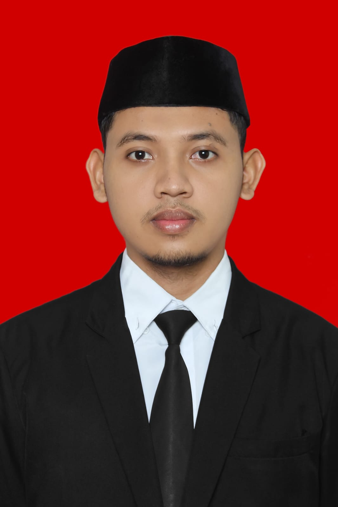

HANA
KerjaSistem pengelolaan sumber daya manusia untuk PT. Perkebunan Nusantara V, dengan beberapa modul untuk operasional SDM.
Laravel · Vue.js · MySQL
Saya menulis kode yang bersih dan peduli terhadap detail yang kebanyakan orang tidak perhatikan.

Saya seorang Web Developer berbasis di Pekanbaru, Riau. Lulus S1 Teknik Informatika dari UIN Suska Riau tahun 2023 — dan sejak itu saya fokus membangun aplikasi web yang fungsional sekaligus enak dilihat.
Saya nyaman bekerja di seluruh stack — Laravel & Vue di sisi belakang dan depan, dengan sentuhan React dan Tailwind. Saya terbiasa dengan ambiguitas dan bekerja baik dalam tim kecil yang bergerak cepat.
Di luar kode: kopi hitam, antarmuka yang rapi, dan sesekali membaca hal-hal yang tidak ada hubungannya dengan programming.
Teknologi dan framework yang saya gunakan.
Backend & API
Frontend
Frontend
Utility CSS
UI Framework
PT. Perkebunan Nusantara V · Pekanbaru
Membangun dan memelihara sistem HRIS (HANA) — platform pengelolaan SDM internal PTPN V. Bekerja langsung dengan tim bisnis untuk menerjemahkan kebutuhan operasional menjadi fitur yang bisa digunakan.
UIN Suska Riau · Pekanbaru
Lulus dengan gelar Sarjana Komputer. Fokus pada pengembangan perangkat lunak dan basis data. Tugas akhir: sistem pakar untuk skrining kesehatan mental menggunakan metode certainty factor.
Aplikasi web yang telah saya bangun.
Sistem pengelolaan sumber daya manusia untuk PT. Perkebunan Nusantara V, dengan beberapa modul untuk operasional SDM.
Laravel · Vue.js · MySQL

Sistem pakar untuk skrining kesehatan mental. Menggunakan metode certainty factor untuk menganalisis respons pasien dan menyarankan kemungkinan kondisi.
Laravel · Bootstrap
Terbuka untuk kolaborasi, proyek baru, atau sekadar ngobrol tentang web.